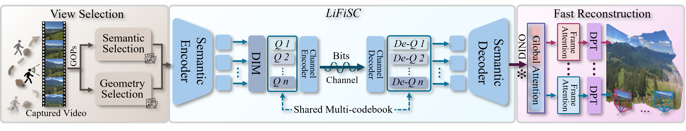

LiFiSCvv: Live High-Fidelity Semantic Communication via
Cross-modal Fusion for Volumetric Video
- Tianyi Gong 1, 2*
- Zijian Cao 1, 2*
- Zhicheng Liang 1, 2
- Dayou Zhang 1, 2
- Fangxin Wang 2, 1‡
- Shuguang Cui 2, 1
2School of Science and Engineering, The Chinese University of Hongkong, Shenzhen
* equal contribution ‡ corresponding author

Abstract
Semantic communication (SC) emerges as a breakthrough paradigm for efficient data transmission in next-generation communication networks. However, SC is still in the infant stage with quite a few limitations, such as insufficient semantic representation capacity, high communication latency, and the susceptibility to channel noise. In this paper, we propose LiFiSC, a cross-modal fusion based generative semantic communication framework with strong semantic compression capacity and high-fidelity semantic restoration. We then extend it to LiFiSCvv, specifically designed to achieve 3D volumetric video transmission and reconstruction with photorealistic visual quality and pixel-level visual consistency, providing end-to-end live watching experience with acceptable latency. We innovatively incorporate unified vision-language encoding into semantic communication, achieving superior semantic understanding and compression. LiFiSCvv comprises three key components: (1) Information redundancy reduction through lightweight video analysis and structure-from-motion techniques, decreasing reconstruction cost; (2) Cross-modal fusion learning driven codec mechanisms that enable efficient semantic representation and robust transmission against channel impairments; and (3) Feed-forward vision transformer for rapid volumetric video reconstruction and rendering. Comprehensive evaluation results demonstrate that LiFiSCvv achieves a live high-fidelity and visually consistent video watching experience, with only seconds of end-to-end latency and around 42× semantic compression, significantly outperforming SOTA methods in general image and volumetric video transmission.
LiFiSCvv = LiFiSC + Volumetric Video Transmission
Our method takes unposed video as input. Initially, we design a video frame selection module with geometric and semantic priors to filter out keyframes. Then these keyframes are then encoded, transmitted, and decoded in real-time by our LiFiSC system. Finally, our proposed fast reconstruction module reconstructs point clouds from the received frames for immersive exploration.
LiFiSCvv Demo


Compressed Image Visualization Comparison (0.375 bpp) of LiFiSC. On the left are the images encoded and decoded by different methods, and on the right is the Ground Truth.